전기산업기사 (2018-08-19 기출문제)
1과목: 전기자기학
1. 자화율을 x, 자속밀도 B, 자계의 세기를 H, 자화의 세기를 J라 할 때, 다음 중 성립될 수 없는 식은?
- B=μH
- J=xB
- μ=μ0+x
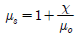
(정답률: 70%)

2. 두 유전체의 경계면에서 정전계가 만족하는 것은?
- 전계의 법선성분이 같다.
- 전계의 접선성분이 같다.
- 전속밀도의 접선성분이 같다.
- 분극 세기의 접선성분이 같다.
(정답률: 70%)
3. 자기 쌍극자의 중심축으로부터 r[m]인 점의 자계의 세기에 관한 설명으로 옳은 것은?
- r에 비례한다.
- r2에 비례한다.
- r2에 반비례한다.
- r3에 반비례한다.
(정답률: 78%)
4. 진공 중의 전계강도 E=ix+jy+kz로 표시될 때 반지름 10m의 구면을 통해 나오는 전체 전속은 약 몇 C 인가?
- 1.1 × 10-7
- 2.1 × 10-7
- 3.2 × 10-7
- 5.1 × 10-7
(정답률: 54%)
5. 물의 유전율을ε , 투자율을 μ라 할 때 물속에서의 전파속도는 몇 m/s 인가?
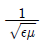
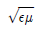
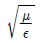
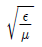
(정답률: 73%)
6. 반지름 a[m]인 원주 도체의 단위 길이당 내부 인덕턴스 [H/m]는?
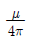
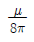
- 4πμ
- 8πμ
(정답률: 61%)
7. Ω·sec와 같은 단위는?
- F
- H
- F/m
- H/m
(정답률: 71%)
8. 그림과 같이 일정한 권선이 감겨진 권회수 N회, 단면적 S[m2], 평균자로의 길이 l[m]인 환상솔레노이드에 전류 I[A]를 흘렸을 때 이 환상솔레노이드의 자기인덕턴스[H]는? (단, 환상철심의 투자율은 μ 이다.)
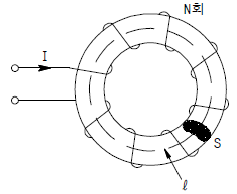
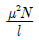
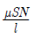
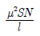
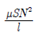
(정답률: 73%)
9. 콘덴서의 성질에 관한 설명으로 틀린 것은?
- 정전용량이란 도체의 전위를 1V로 하는데 필요한 전하량을 말한다.
- 용량이 같은 콘덴서를 n개 직렬 연결하면 내압은 n배, 용량은 1/n로 된다.
- 용량이 같은 콘덴서를 n개 병렬 연결하면 내압은 같고, 용량은 n배로 된다.
- 콘덴서를 직렬 연결할 때 각 콘덴서에 분포되는 전하량은 콘덴서 크기에 비례한다.
(정답률: 58%)
10. 두 도체 사이에 100V의 전위를 가하는 순간 700μC의 전하가 축적되었을 때 이 두 도체 사이의 정전용량은 몇 μF인가?
- 4
- 5
- 6
- 7
(정답률: 82%)
11. 무한 평면도체로부터 거리 a[m]인 곳에 점전하 2π[C]가 있을 때 도체 표면에 유도되는 최대 전하밀도는 몇 [C/m2] 인가?
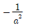
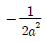
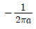
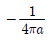
(정답률: 46%)
12. 강자성체가 아닌 것은?
- 철(Fe)
- 니켈(Ni)
- 백금(Pt)
- 코발트(Co)
(정답률: 81%)
13. 온도 0℃ 에서 저항이 R1[Ω], R2[Ω], 저항 온도계수가α1, α2[1/℃]인 두 개의 저항선을 직렬로 접속하는 경우, 그 합성저항 온도계수는 몇 1/℃ 인가?
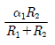
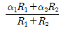
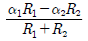
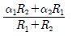
(정답률: 70%)
14. 평행판 콘덴서에서 전극간에 V[V]의 전위차를 가할 때, 전계의 강도가 공기의 절연내력 E[V/m]를 넘지 않도록 하기 위한 콘덴서의 단위면적당 최대용량은 몇 F/m2인가?
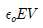
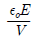
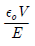
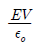
(정답률: 69%)
15. 그림과 같이 반지름 a[m], 중심간격 d[m], A에 +λ[C/m], B에 -λ[C/m]의 평행 원통도체가 있다. d ≫ a라 할 때의 단위길이당 정전용량은 약 몇 F/m 인가?
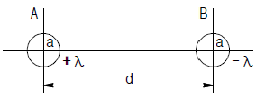
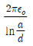
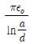
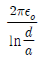
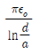
(정답률: 53%)
16. 벡터 A=5r sin ø az가 원기둥 좌표계로 주어졌다. 점(2, π, 0) 에서의 ∇ × A를 구한 값은?
- 5ar
- -5ar
- 5aø
- -5aø
(정답률: 59%)
17. 두 종류의 금속으로 된 폐회로에 전류를 흘리면 양 접속점에서 한쪽은 온도가 올라가고 다른 쪽은 온도가 내려가는 현상을 무엇이라 하는가?
- 볼타(Volta) 효과
- 지벡(Seebeck) 효과
- 펠티에(Peltier) 효과
- 톰슨(Thomson) 효과
(정답률: 70%)
18. 전자유도작용에서 벡터퍼텐셜을 A[Wb/m]라 할 때 유도 되는 전계 E[V/m]는?
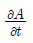
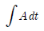
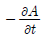
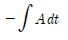
(정답률: 76%)
19. 비투자율 μs, 자속밀도 B[Wb/m2]인 자계 중에 있는 m[Wb]의 점자극이 받는 힘[N]은?
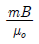
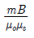
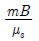
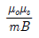
(정답률: 79%)
20. 모든 전기장치를 접지시키는 근본적 이유는?
- 영상전하를 이용하기 때문에
- 지구는 전류가 잘 통하기 때문에
- 편의상 지면의 전위를 무한대로 보기 때문에
- 지구의 용량이 커서 전위가 거의 일정하기 때문에
(정답률: 80%)
2과목: 전력공학
21. 단상 2선식에 비하여 단상 3선식의 특징으로 옳은 것은?
- 소요 전선량이 많아야 한다.
- 중성선에는 반드시 퓨즈를 끼워야 한다.
- 110V 부하 외에 220V 부하의 사용이 가능하다.
- 전압 불평형을 줄이기 위하여 저압선의 말단에 전력용콘덴서를 설치한다.
(정답률: 69%)
22. 정삼각형 배치의 선간거리가 5m이고, 전선의 지름이 1cm인 3상 가공 송전선의 1선의 정전용량은 약 몇 μF/km 인가?
- 0.008
- 0.016
- 0.024
- 0.032
(정답률: 57%)
23. 수력발전소의 취수 방법에 따른 분류로 틀린 것은?
- 댐식
- 수로식
- 역조정지식
- 유역변경식
(정답률: 64%)
24. 선로의 특성임피던스에 관한 내용으로 옳은 것은?
- 선로의 길이에 관계없이 일정하다.
- 선로의 길이가 길어질수록 값이 커진다.
- 선로의 길이가 길어질수록 값이 작아진다.
- 선로의 길이보다는 부하전력에 따라 값이 변한다.
(정답률: 66%)
25. 송전선에 복도체를 사용할 때의 설명으로 틀린 것은?
- 코로나 손실이 경감된다.
- 안정도가 상승하고 송전용량이 증가한다.
- 정전 반발력에 의한 전선의 진동이 감소된다.
- 전선의 인덕턴스는 감소하고, 정전용량이 증가한다.
(정답률: 62%)
26. 화력발전소에서 증기 및 급수가 흐르는 순서는?
- 보일러 → 과열기 → 절탄기 → 터빈 → 복수기
- 보일러 → 절탄기 → 과열기 → 터빈 → 복수기
- 절탄기 → 보일러 → 과열기 → 터빈 → 복수기
- 절탄기 → 과열기 → 보일러 → 터빈 → 복수기
(정답률: 66%)
27. 선간전압이 V[kV]이고, 1상의 대지정전용량이 C[μF], 주파수가 f[Hz]인 3상 3선식 1회선 송전선의 소호리액터 접지방식에서 소호리액터의 용량은 몇 kVA 인가?
- 6πfCV2 × 10-3
- 3πfCV2 × 10-3
- 2πfCV2 × 10-3
- √3πfCV2 × 10-3
(정답률: 47%)
28. 중성점 비접지방식을 이용하는 것이 적당한 것은?
- 고전압 장거리
- 고전압 단거리
- 저전압 장거리
- 저전압 단거리
(정답률: 66%)
29. 수전단전압이 3300V이고, 전압강하율이 4%인 송전선의 송전단전압은 몇 V 인가?
- 3395
- 3432
- 3495
- 5678
(정답률: 74%)
30. 현수애자 4개를 1련으로 한 66kV 송전선로가 있다. 현수애자 1개의 절연저항은 1500MΩ, 이 선로의 경간이 200m라면 선로 1km당의 누설컨덕턴스는 몇 ℧ 인가?
- 0.83 × 10-9
- 0.83 × 10-6
- 0.83 × 10-3
- 0.83 × 10-2
(정답률: 41%)
31. 변압기의 손실 중 철손의 감소 대책이 아닌 것은?
- 자속 밀도의 감소
- 권선의 단면적 증가
- 아몰퍼스 변압기의 채용
- 고배향성 규소 강판 사용
(정답률: 61%)
32. 변압기 내부 고장에 대한 보호용으로 현재 가장 많이 쓰이고 있는 계전기는?
- 주파수 계전기
- 전압차동 계전기
- 비율차동 계전기
- 방향거리 계전기
(정답률: 78%)
33. 그림과 같은 전선로의 단락용량은 약 몇 MVA 인가? (단, 그림의 수치는 10000kVA를 기준으로 한 %리액턴스를 나타낸다.)
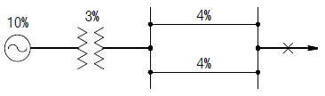
- 33.7
- 66.7
- 99.7
- 132.7
(정답률: 68%)
34. 영상변류기를 사용하는 계전기는?
- 지락계전기
- 차동계전기
- 과전류계전기
- 과전압계전기
(정답률: 65%)
35. 전선의 지지점 높이가 31m이고, 전선의 이도가 9m라면 전선의 평균 높이는 몇 m 인가?
- 25.0
- 26.5
- 28.5
- 30.0
(정답률: 51%)
36. 초고압용 차단기에서 개폐저항을 사용하는 이유는?
- 차단전류 감소
- 이상전압 감쇄
- 차단속도 증진
- 차단전류의 역률개선
(정답률: 61%)
37. 전력계통 안정도는 외란의 종류에 따라 구분되는데, 송전 선로에서의 고장, 발전기 탈락과 같은 큰 외란에 대한 전력계통의 동기운전 가능 여부로 판정되는 안정도는?
- 과도안정도
- 정태안정도
- 전압안정도
- 미소신호안정도
(정답률: 61%)
38. 역률개선에 의한 배전계통의 효과가 아닌 것은?
- 전력손실 감소
- 전압강하 감소
- 변압기 용량 감소
- 전선의 표피효과 감소
(정답률: 52%)
39. 원자력 발전의 특징이 아닌 것은?(문제 오류로 가답안 발표시 1번으로 발표되었지만 확정답안 발표시 1, 3번이 정답 처리 되었습니다. 여기서는 1번을 누르면 정답 처리 됩니다.)
- 건설비와 연료비가 높다.
- 설비는 국내 관련 사업을 발전시킨다.
- 수송 및 저장이 용이하여 비용이 절감된다.
- 방사선 측정기, 폐기물 처리 장치 등이 필요하다.
(정답률: 77%)
40. 최대 전력의 발생시각 또는 발생시기의 분산을 나타내는 지표는?
- 부등률
- 부하율
- 수용률
- 전일효율
(정답률: 63%)
3과목: 전기기기
41. 3상 Y결선, 30kW, 460V, 60Hz 정격인 유도전동기의 시험 결과가 다음과 같다. 이 전동기의 무부하 시 1상당 동손은 약 몇 W인가? (단, 소수점 이하는 무시한다.)
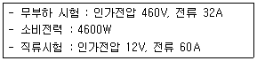
- 102
- 104
- 106
- 108
(정답률: 39%)
42. 임피던스 강하가 4%인 변압기가 운전 중 단락되었을 때 그 단락전류는 정격전류의 몇 배인가?
- 15
- 20
- 25
- 30
(정답률: 74%)
43. 3상 유도전동기의 특성에 관한 설명으로 옳은 것은?
- 최대토크는 슬립과 반비례한다.
- 기동토크는 전압의 2승에 비례한다.
- 최대토크는 2차 저항과 반비례한다.
- 기동토크는 전압의 2승에 반비례한다.
(정답률: 52%)
44. 3상 유도전동기의 속도제어법이 아닌 것은?
- 극수변환법
- 1차 여자제어
- 2차 저항제어
- 1차 주파수제어
(정답률: 60%)
45. 3상 유도전동기의 출력이 10kW, 전부하 때의 슬립이 5%라 하면 2차 동손은 약 몇 kW 인가?
- 0.426
- 0.526
- 0.626
- 0.726
(정답률: 59%)
46. 직류발전기의 전기자 권선법 중 단중 파권과 단중 중권을 비교했을 때 단중 파권에 해당하는 것은?
- 고전압 대전류
- 저전압 소전류
- 고전압 소전류
- 저전압 대전류
(정답률: 60%)
47. 일반적으로 전철이나 화학용과 같이 비교적 용량이 큰 수은 정류기용 변압기의 2차측 결선방식으로 쓰이는 것은?
- 3상 반파
- 3상 전파
- 3상 크로즈파
- 6상 2중 성형
(정답률: 68%)
48. 자기용량 3kVA, 3000/100V의 단권변압기를 승압기로 연결하고 1차측에 3000V를 가했을 때 그 부하용량[kVA]은?
- 76
- 85
- 93
- 94
(정답률: 54%)
49. SCR에 관한 설명으로 틀린 것은?
- 3단자 소자이다.
- 전류는 애노드에서 캐소드로 흐른다.
- 소형의 전력을 다루고 고주파 스위칭을 요구하는 응용분야에 주로 사용된다.
- 도통 상태에서 순방향 애노드전류가 유지전류 이하로 되면 SCR은 차단상태로 된다.
(정답률: 54%)
50. 직류 분권전동기의 기동 시에는 계자 저항기의 저항 값은 어떻게 설정하는가?
- 끊어 둔다.
- 최대로 해 둔다.
- 0(영)으로 해 둔다.
- 중위(中位)로 해 둔다.
(정답률: 73%)
51. 공급전압이 일정하고 역률 1로 운전하고 있는 동기전동기의 여자전류를 증가시키면 어떻게 되는가?
- 역률은 뒤지고 전기자 전류는 감소한다.
- 역률은 뒤지고 전기자 전류는 증가한다.
- 역률은 앞서고 전기자 전류는 감소한다.
- 역률은 앞서고 전기자 전류는 증가한다.
(정답률: 43%)
52. 동기발전기의 단락비나 동기임피던스를 산출하는 데 필요한 특성곡선은?
- 부하 포화곡선과 3상 단락곡선
- 단상 단락곡선과 3상 단락곡선
- 무부하 포화곡선과 3상 단락곡선
- 무부하 포화곡선과 외부특성곡선
(정답률: 68%)
53. 변압기의 내부고장에 대한 보호용으로 사용되는 계전기는 어느 것이 적당한가?
- 방향계전기
- 온도계전기
- 접지계전기
- 비율차동계전기
(정답률: 78%)
54. 직류 분권전동기 운전 중 계자 권선의 저항이 증가할 때 회전속도는?
- 일정하다.
- 감소한다.
- 증가한다.
- 관계없다.
(정답률: 56%)
55. 동기기의 과도 안정도를 증가시키는 방법이 아닌 것은?
- 단락비를 크게 한다.
- 속응 여자방식을 채용한다.
- 회전부의 관성을 작게 한다.
- 역상 및 영상임피던스를 크게 한다.
(정답률: 53%)
56. 단상 반발 유도전동기에 대한 설명으로 옳은 것은?
- 역률은 반발기동형보다 나쁘다.
- 기동토크는 반발기동형보다 크다.
- 전부하 효율은 반발기동형보다 좋다.
- 속도의 변화는 반발기동형보다 크다.
(정답률: 32%)
57. 2중 농형 유도전동기가 보통 농형 유도전동기에 비해서 다른 점은 무엇인가?
- 기동전류가 크고, 기동토크도 크다.
- 기동전류가 적고, 기동토크도 적다.
- 기동전류는 적고, 기동토크는 크다.
- 기동전류는 크고, 기동토크는 적다.
(정답률: 59%)
58. 직류전동기의 공급전압을 V[V], 자속을 ø[Wb], 전기자 전류를 Ia[A], 전기자 저항을 Ra[Ω], 속도를 N[rpm]이라 할 때 속도의 관계식은 어떻게 되는가? (단, k는 상수이다.)
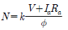
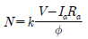
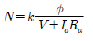
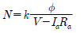
(정답률: 66%)
59. 유입식 변압기에 콘서베이터(conservator)를 설치하는 목적으로 옳은 것은?
- 충격 방지
- 열화 방지
- 통풍 장치
- 코로나 방지
(정답률: 72%)
60. 3상 반파정류회로에서 직류전압의 파형은 전원전압 주파수의 몇 배의 교류분을 포함하는가?
- 1
- 2
- 3
- 6
(정답률: 62%)
4과목: 회로이론
61.
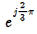
와 같은 것은?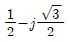
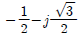
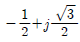
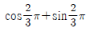
(정답률: 56%)
62. 100V, 800W, 역률 80%인 교류회로의 리액턴스는 몇 Ω인가?
- 6
- 8
- 10
- 12
(정답률: 43%)
63. 그림과 같은 π형 4단자 회로의 어드미턴스 상수 중 Y22는 몇 ℧ 인가?
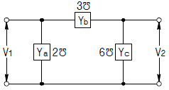
- 5
- 6
- 9
- 11
(정답률: 57%)
64. 불평형 3상 전류 Ia=15+j2[A], Ib=-20-j14[A], Ic=-3+j10[A]일 때 영상전류 I0는 약 몇 A 인가?
- 2.67+j0.36
- 15.7-j3.25
- -1.91+j6.24
- -2.67-j0.67
(정답률: 70%)
65. 어떤 계에 임펄스 함수(δ함수)가 입력으로 가해졌을 때 시간함수 e-2t가 출력으로 나타났다. 이 계의 전달함수는?
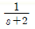
(정답률: 61%)
66. 0.2H의 인덕터와 150Ω의 저항을 직렬로 접속하고 220V 상용교류를 인가하였다. 1시간 동안 소비된 전력량은 약몇 Wh 인가?
- 209.6
- 226.4
- 257.6
- 286.9
(정답률: 38%)
67. 어떤 제어계의 출력이 로 주어질때 출력의 시간함수 c(t)의 최종값은?
- 5
- 2
- 2/5
- 5/2
(정답률: 73%)
68. 와 [A]의 위상차를 시간으로 나타내면 약 몇 초인가?
- 3.33 × 10-4
- 4.33 × 10-4
- 6.33 × 10-4
- 8.33 × 10-4
(정답률: 45%)
69. 같은 저항 r[Ω] 6개를 사용하여 그림과 같이 결선하고 대칭 3상 전압 V[V]를 가하였을 때 흐르는 전류 I는 몇A 인가?
(정답률: 52%)
70. 어떤 교류전동기의 명판에 역률=0.6, 소비전력=120kW로 표기되어 있다. 이 전동기의 무효전력은 몇 kVar 인가?
- 80
- 100
- 140
- 160
(정답률: 53%)
71. 대칭 3상 전압이 있을 때 한 상의 Y전압 순시값 ep=1000√2 sin wt + 500√2 sin (3wt+20°) + 100√2 sin (5wt+30°)[V]이면 선간전압 El에 대한 상전압 Ep의 실효값 비율 은 약 몇 %인가 ?
- 55
- 64
- 85
- 95
(정답률: 43%)
72. 대칭 좌표법에서 사용되는 용어 중 각상에 공통인 성분을 표시하는 것은?
- 영상분
- 정상분
- 역상분
- 공통분
(정답률: 68%)
73. 어느 저항에 v1=220√2 sin (2πㆍ60t-30°)[V]와 v2=100√2 sin(3ㆍ2πㆍ60t-30°)[V]의 전압이 각각 걸릴 때의 설명으로 옳은 것은?.
- v1이 v2보다 위상이 15° 앞선다.
- v1이 v2보다 위상이 15° 뒤진다.
- v1이 v2보다 위상이 75° 앞선다.
- v1과 v2의 위상관계는 의미가 없다.
(정답률: 67%)
74. RLC 병렬 공진회로에 관한 설명 중 틀린 것은?
- R의 비중이 작을수록 Q가 높다.
- 공진 시 입력 어드미턴스는 매우 작아진다.
- 공진 주파수 이하에서의 입력전류는 전압보다 위상이 뒤진다.
- 공진 시 L 또는 C에 흐르는 전류는 입력전류 크기의 Q배가 된다.
(정답률: 41%)
75. 대칭 5상 회로의 선간전압과 상전압의 위상차는?
- 27°
- 36°
- 54°
- 72°
(정답률: 62%)
76. 의 역라플라스 변환을 구하면 어떻게 되는가?
- sin (wt-θ)
- sin (wt+θ)
- cos (wt-θ)
- cos (wt+θ)
(정답률: 42%)
77. 대칭 3상 전압이 a상 Va[V], b상 Vb=a2Va[V], c상Vc=aVa[V]일 때 a상을 기준으로 한 대칭분전압 중 정상분 V1[V]은 어떻게 표시되는가? (단, 이다.)
- 0
- Va
- aVa
- a2Va
(정답률: 53%)
78. 그림에서 a, b 단자의 전압이 100V, a, b에서 본 능동회로망 N의 임피던스가 15Ω 일 때, a, b 단자에 10Ω의 저항을 접속하면 a, b 사이에 흐르는 전류는 몇 A 인가?
- 2
- 4
- 6
- 8
(정답률: 63%)
79. 전원이 Y결선, 부하가 Δ결선된 3상 대칭회로가 있다. 전원의 상전압이 220V이고 전원의 상전류가 10A일 경우, 부하한 상의 임피던스[Ω]는?
- 22√3
- 22
- 66
(정답률: 45%)
80. 의 라플라스 변환 X(s)는? (단, x(0+)=0이다.)
(정답률: 61%)
5과목: 전기설비기술기준 및 판단 기준
81. 사용전압이 22.9kV인 가공전선과 지지물 사이의 이격거리는 몇 cm 이상이어야 하는가?
- 5
- 10
- 15
- 20
(정답률: 42%)
82. 농사용 저압 가공전선로의 시설에 대한 설명으로 틀린 것은?
- 전선로의 경간은 30m 이하일 것
- 목주의 굵기는 말구 지름이 9cm 이상일 것
- 저압 가공전선의 지표상 높이는 5m 이상일 것
- 저압 가공전선은 지름 2mm 이상의 경동선일 것
(정답률: 39%)
83. 수소 냉각식 발전기·조상기 또는 이에 부속하는 수소 냉각 장치의 시설방법으로 틀린 것은?(오류 신고가 접수된 문제입니다. 반드시 정답과 해설을 확인하시기 바랍니다.)
- 발전기안 도는 조상기안의 수소의 순도가 70% 이하로 저하한 경우에 경보장치를 시설할 것
- 발전기 또는 조상기는 기밀구조의 것이고 또한 수소가 대기압에서 폭발하는 경우 생기는 압력에 견디는 강도를 가지는 것일 것
- 발전기안 또는 조상기안의 수소의 압력을 계측하는 장치 및 그 압력이 현저히 변동할 경우에 이를 경보하는 장치를 시설할 것
- 발전기축의 밀봉부에는 질소 가스를 봉입할 수 있는 장치와 누설한 수소가스를 안전하게 외부에 방출할 수 있는 장치를 설치할 것
(정답률: 68%)
84. 폭연성 분진 또는 화약류의 분말이 전기설비가 발화원이되어 폭발할 우려가 있는 곳에 시설하는 저압 옥내배선의 공사방법으로 옳은 것은?
- 금속관공사
- 애자사용공사
- 합성수지관공사
- 캡타이어 케이블공사
(정답률: 68%)
85. 전력계통의 운용에 관한 지시 및 급전조작을 하는 곳은?
- 급전소
- 개폐소
- 변전소
- 발전소
(정답률: 71%)
86. 가공전선로의 지지물에 취급자가 오르고 내리는데 사용하는 발판 볼트 등은 지표상 몇 m 미만에 시설하여서는 아니되는가?
- 1.2
- 1.5
- 1.8
- 2.0
(정답률: 72%)
87. 금속몰드 배선공사에 대한 설명으로 틀린 것은?
- 몰드에는 특별 제3종 접지공사를 할 것
- 접속점을 쉽게 점검할 수 있도록 시설할 것
- 황동제 또는 동제의 몰드는 폭이 5cm 이하, 두께 0.5mm 이상인 것일 것
- 몰드 안의 전선을 외부로 인출하는 부분은 몰드의 관통 부분에서 전선이 손상될 우려가 없도록 시설할 것
(정답률: 44%)
88. 그룹 2의 의료장소에 상용전원 공급이 중단될 경우 15초 이내에 최소 몇 %의 조명에 비상전원을 공급하여야 하는 가?
- 30
- 40
- 50
- 60
(정답률: 60%)
89. 전선을 접속하는 경우 전선의 세기(인장하중)는 몇 % 이상 감소되지 않아야 하는가?
- 10
- 15
- 20
- 25
(정답률: 64%)
90. 고압 보안공사 시에 지지물로 A종 철근 콘크리트주를 사용할 경우 경간은 몇 m 이하이어야 하는가?
- 50
- 100
- 150
- 400
(정답률: 49%)
91. 154kV 가공전선을 사람이 쉽게 들어갈 수 없는 산지(山地)에 시설하는 경우 전선의 지표상 높이는 몇 m 이상으로 하여야 하는가?
- 5.0
- 5.5
- 6.0
- 6.5
(정답률: 55%)
92. 조상기의 보호장치로서 내부 고장 시에 자동적으로 전로로부터 차단되는 장치를 설치하여야 하는 조상기 용량은 몇 kVA 이상인가?
- 5000
- 7500
- 10000
- 15000
(정답률: 49%)
93. 154kV 가공전선로를 제1종 특고압 보안공사에 의하여 시설하는 경우 사용전선의 단면적은 몇 mm2 이상의 경동연선 이어야 하는가?
- 35
- 50
- 95
- 150
(정답률: 53%)
94. 풀용 수중 조명등에 전기를 공급하기 위하여 1차측 120V, 2차측 30V의 절연 변압기를 사용하였다. 절연 변압기 2차측 전로의 접지에 대한 설명으로 옳은 것은?
- 접지하지 않는다.
- 제1종 접지공사로 접지한다.
- 제2종 접지공사로 접지한다.
- 제3종 접지공사로 접지한다.
(정답률: 44%)
95. 조가용선을 사용하지 않아도 되는 전력 보안 통신선의 굵기는 지름 몇 mm의 어떤 선을 사용하는가? (단, 케이블은 제외한다.)
- 2.0, 경동선
- 2.0, 연동선
- 2.6, 경동선
- 2.6, 연동선
(정답률: 53%)
96. 인가가 많이 연접되어 있는 장소에 시설하는 가공전선로의 구성재에 병종 풍압하중을 적용할 수 없는 경우는?
- 저압 또는 고압 가공 전선로의 지지물
- 저압 또는 고압 가공 전선로의 가섭선
- 사용전압이 35kV 이상의 전선에 특고압 가공전선로에 사용하는 케이블 및 지지물
- 사용전압이 35kV 이하의 전선에 특고압 절연전선을 사용하는 특고압 가공전선로의 지지물
(정답률: 48%)
97. 지선 시설에 관한 설명으로 틀린 것은?
- 지선의 안전율은 2.5 이상이어야 한다.
- 철탑은 지선을 사용하여 그 강도를 분담시켜야 한다.
- 지선에 연선을 사용할 경우 소선 3가닥 이상의 연선이어야 한다.
- 지선근가는 지선의 인장하중에 충분히 견디도록 시설하여야 한다.
(정답률: 67%)
98. 횡단보도교 위에 시설하는 경우 그 노면상 전력보안 가공 통신선의 높이는 몇 m 이상인가?
- 3
- 4
- 5
- 6
(정답률: 36%)
99. 전격살충기의 시설방법으로 틀린 것은?
- 전기용품안전 관리법의 적용을 받은 것을 설치한다.
- 전용개폐기를 가까운 곳에 쉽게 개폐할 수 있게 시설한다.
- 전격격자가 지표상 3.5m 이상의 높이가 되도록 시설한다.
- 전격격자와 다른 시설물 사이의 이격거리는 50cm 이상으로 한다.
(정답률: 48%)
100. 옥내에 시설하는 사용전압 400V 미만의 이동 전선으로 사용할 수 없는 전선은?
- 면절연전선
- 고무코드전선
- 용접용케이블
- 고무절연 클로로프렌 캡타이어 케이블
(정답률: 50%)
이유: 이 식은 자화율과 자속밀도의 곱이 자계의 세기와 자화의 세기의 합과 같다는 것을 나타내는 식이다. 하지만 이 식에서는 자화율과 자속밀도의 곱이 자화의 세기와 같다는 것을 나타내는 "J=xB" 식이 없다. 따라서 이 식은 성립될 수 없다.